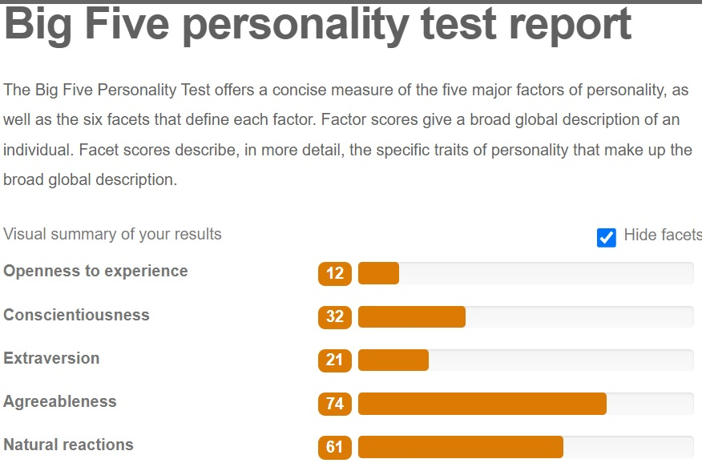

About Me
My name is Kshitiz Dhungel, I usually answer to Tiz. I am 28 and living in Canberra, Australia. I was originally born in Nepal and have been living in Australia for around 10 yrs. I have previously worked in hospitality industry running a restaurant and am currently working in disability and ageing support. I can speak Hindi, Nepali and English. Fun fact I did get my certificate IV in IT in college studying only for 2 yrs but never pursued it as a career.
I have always loved IT, during my studies in college we went from web-design to building a game. It was fun times I had with my friends to design these products. But after college I started working and have forgotten most of my knowledge. I still stay up to date with all the new products that help in improving people’s standard of living.
I have been thinking of studying for a while, but I am unable to give enough time because of work. Recently my situation changed, and I enrolled in RMIT. As RMIT is offering their courses online, it is flexible and am able to give the required time during my off hours.
I plan to get to know as many aspects of IT as I can while I am studying from RMIT. I don’t want to be limited and learn everything from web-design, game development, programming, etc to using various tools to build different products.
Thanks for your interest
Tiz
Dream job
While it is a far way off for me to be able to apply for this job. I found while looking at different type of jobs on IT, I became very interested in User Experience Designer.
Primary duties: User Experience Designer are responsible for development of product that are fun, useful, efficient and effective. They do this by getting feedback from users, developer and testing them constantly. They must be versatile and flexible to make changes according to circumstances.
This position provides me the opportunity to make various product while focussing on the experience the clients have using the product.
Requirements: Completing Bachelor in IT, understanding and developing knowledge from extra training in design, business, web development and programming. Having experience while doing internship or portfolio of your design. These are general but most of the application I looked at are looking for 3-5 experience.
This position requires the experience of being able to use various tools to develop website, software and being able to design various type of products. While also being knowledgeable in business. I have some knowledge in business from my days in managing a business. I love working with people as teamwork and communication is a crucial part of my current work.
My main focus while studying IT in RMIT would be to learn to use different tools like programming using different language, web designing using different programs. I hopefully can learn sketch, invision studio, proto.io, webflow, balsamiq and Axure as they are some of the tools I hope to to at least understand and be able to use by the end of my degree.
Profile
Even though I take these personality traits with a grain of salt, it has shown me some positive and some negative aspect of my personality. Which after understanding has hopefully prepared me better for future.
links
http://www.educationplanner.org/students/self-assessments/learning-styles-quiz.shtml?event=results&A=4&V=7&T=9
https://www.16personalities.com/profile
https://www.123test.com/report/UIUICWOMOOH2J88UIJ/
IT Project
I have always wondered why no helpful products for older people and people with disability are there, I want to build an app for android and iOS for helping people with disability and aging to be used and assist them in their day to day life. I want this product to alleviate and make it much smoother for people with hard hearing, bad eyesight, reduced motor skills and any issues to be able use. I want to build a software similar to Siri, a personal assistant with better optimisation and more usable for people living at the old age or with disability.
While working in disability and ageing sector, I have noticed a lot of my clients don’t use their phone or any app to help them in their daily life. There was a client who was using a app for txt to speech but it felt very lack and not optimised. Since then, this idea for an app always stayed at the back of my head. I looked up online and found a lot of apps which are useful for people with disability, but it felt like there was no synergy between these apps. Hence, I thought about building a versatile app to tackle the problem.
My idea was to build a fully optimised and user-friendly app for people living with disability or ageing person called “Guide Dog”. This app I want to build might not be possible right now but with the upgrades phone are getting in the recent years I am hopeful that it will be possible in the very near future. For now, I have some vision as to what I want this app to do.
Using the camera and generating a guide to help people with sight problems avoid obstacle by having the app guide them the direction to walk or what is in front of them, reading them the text written in front of them. Example. Reading a menu in a restaurant using the phone camera.
Helping them to use various simple apps like uber, ordering food and various app that is rather difficult or not optimised enough. I know personal assistant like Siri and google can do similar things but if it is built in one app that does all, is optimised and updated regularly would be much better.
Using the combination of earphone and phone to help people with hearing difficulty. I want to optimise it so people can manage the volume they want to hear at. As hearing aid are expensive this can have double benefit being able to communicate using a earphone and also using it in a similar fashion to using it as a hearing aid. Example keeping the phone closer to the speaker for the person to hear.
Using different systems like instead of having to speak make it more organised and have assistant with text on the screen for people unable to hear. Having live speech to text for people conversing. Especially now with people wearing mask some of my hearing-impaired clients are not able to read lips to comprehend what I am saying.
Using text to speech for people with talking difficulty for any reason. Building an AI to understand the patterns and come up with options for a faster communication.
Having a live sign language translation so phone can be given to someone else and using the camera the person can translate sign instead of having to talk using text to speech, in some situations which might be time consuming.
Having a support built in to have an online chat system to help clients when they have issue with the app.
All of the function should be able to mix and Mach depending on client’s personal situation. It needs to be very simple and clear app, all the functions integrated smoothly for a easy and comfortable use. Unfortunately, this system would need to be monetised for creation and further development using a team of specialist.
Tools and technology required are App developer software. Team for support and updating software. Computer, iPhone and android phone. Government funding, if possible, security, cloud storage. These are the only one I can possibly think at the time of recording.
Skill required are programming, business management, graphics designer, mobile app developer, engineer some soft skills like communication, empathy and teamwork. These are the only one I can possibly think at the time of recording.
If this project is successful, this app can change millions of people’s life. There should be no problem in communication as long as anyone has a phone and this app. As a financial aspect people will always grow old and this app can be hugely beneficial if implemented properly and has a huge lifespan. With future updates and implementing different language options it can have a impact on the world as a whole.